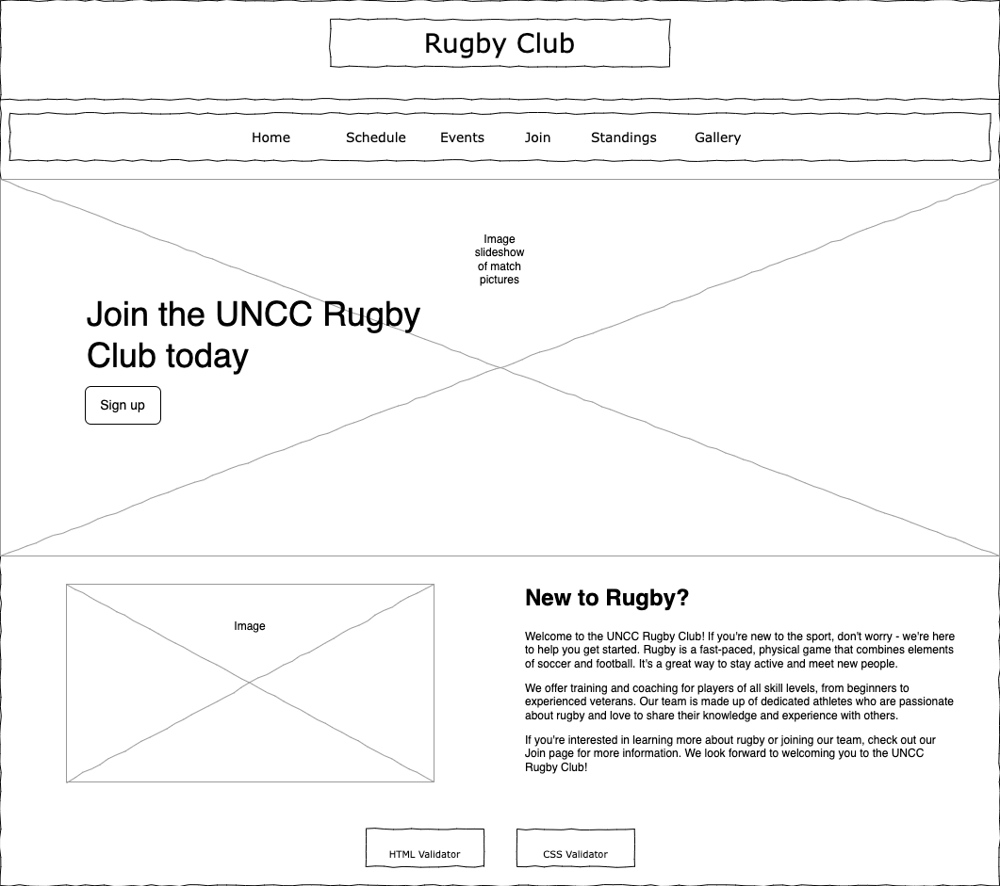
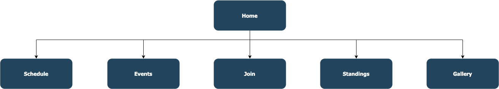

The project will include various dynamic functionality features, including an interactive event
calendar, a membership registration form with real-time validation, a team standings table, a photo
gallery with a lightbox feature, and a match schedule filter.
Intended Users
The intended users of this website are going to be club members, prospective members, and anyone
interested in the club. Specifically, the users will be interested in the upcoming games, practices,
and club events, membership registration, team standings, images from games, practices, and social
events, and upcoming matches.
Content Overview
The website will showcase the UNCC Rugby Club events, membership registration form, team standings,
images and videos from games, practices, and social events, and upcoming matches in an interactive
format with dynamic functionality features. The website will include pages for events, join,
standings, gallery, schedule, and about us.
Client Information
Name of the client:
• CJ
Organization/Institute/Business the client/s are associated with:
• University of North Carolina at Charlotte
Client’s valid email address:
• cj@uncc.edu

Wireframe

Sitemap
Page Details
Events
Purpose of the page:
• Display upcoming games, practices, and club events in an interactive calendar format
Audience/Users of page (customer, admin, etc.):
• Club members, prospective members, and anyone interested in the club
What will be content of the page?:
• Upcoming games, practices, and club events
Is this a page where you are asking users to enter data on the page?:
• No
Will those data fields need any validations (if any)?:
• N/A
Will the page contain buttons or hyperlinks or drop downs?:
• Yes, an interactive calendar
What actions will happen in the page?:
• Users can click on individual events for more information or to add them to their personal
calendars
Any special notes regarding the page (if any)?:
• N/A
Join
Purpose of the page:
• Collect information from prospective members and provide real-time validation of form
fields
Audience/Users of page (customer, admin, etc.):
• Prospective members
What will be content of the page?:
• Membership registration form
Is this a page where you are asking users to enter data on the page?:
• Yes
Will those data fields need any validations (if any)?:
• Yes, real-time validation using JavaScript
Will the page contain buttons or hyperlinks or drop downs?:
• Yes, a submit button
What actions will happen in the page?:
• Data will be processed and validated in real-time
Any special notes regarding the page (if any)?:
• N/A
Standings
Purpose of the page:
• Display team standings, including wins, losses, points scored, and points conceded, in a
dynamic table format that is sortable by each column
Audience/Users of page (customer, admin, etc.):
• Club members, prospective members, and anyone interested in the club
What will be content of the page?:
• Team standings, including wins, losses, points scored, and points conceded
Is this a page where you are asking users to enter data on the page?:
• No
Will those data fields need any validations (if any)?:
• N/A
Will the page contain buttons or hyperlinks or drop downs?:
• Yes, a sortable table
What actions will happen in the page?:
• Users can sort the table by each column
Any special notes regarding the page (if any)?:
• N/A
Gallery
Purpose of the page:
• Showcase images from games, practices, and social events in an interactive photo gallery
format with a lightbox feature for individual photos
Audience/Users of page (customer, admin, etc.):
• Club members, prospective members, and anyone interested in the club
What will be content of the page?:
• Images from games, practices, and social events
Is this a page where you are asking users to enter data on the page?:
• No
Will those data fields need any validations (if any)?:
• N/A
Will the page contain buttons or hyperlinks or drop downs?:
• The gallery section of the website will contain buttons or hyperlinks or drop downs for an
interactive photo gallery format with
a lightbox feature for individual photos.
What actions will happen in the page?:
• Display images from games, practices, and social events in an interactive photo gallery
format with a lightbox feature for individual photos. Users can click on individual photos
to enlarge them.
Any special notes regarding the page (if any)?:
• N/A
Schedule
Purpose of the page:
• Display upcoming matches in a list format that can be filtered by date range or opponent
Audience/Users of page (customer, admin, etc.):
• Club members, prospective members, and anyone interested in the club
What will be content of the page?:
• Upcoming matches
Is this a page where you are asking users to enter data on the page?:
• No
Will those data fields need any validations (if any)?:
• N/A
Will the page contain buttons or hyperlinks or drop downs?:
• Yes, a date range filter
What actions will happen in the page?:
• Users can filter matches by date range or opponent